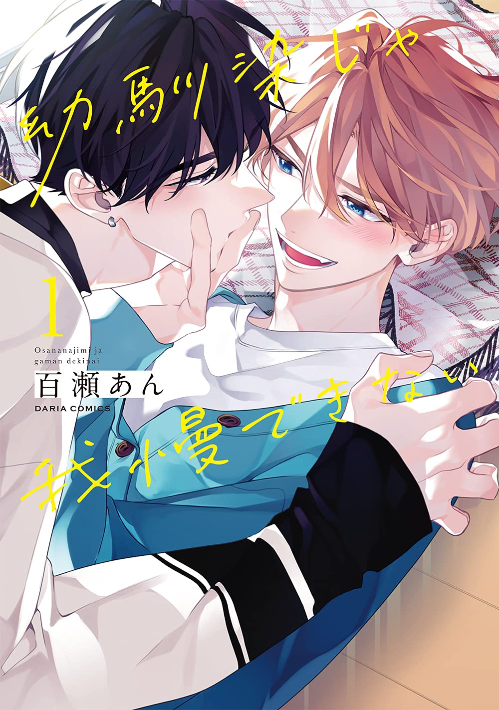

＜—Back
I Can’t Stand Being Your Childhood Friend
Author: An Momose
Company: Seven Seas
Official Site

Volume 1
Aoi and Ryouta have been friends for as long as they can remember, so when it comes time to head off to college, it only makes sense for them to room together! Practically joined at the hip, they are convinced that their relationship will stay the same forever…until one day, Aoi wakes up to find Ryouta leaning in to kiss him! Now Aoi must unpack this bewildering development, but he just can’t seem to forget Ryouta’s touch…
Releases Oct. 2025!